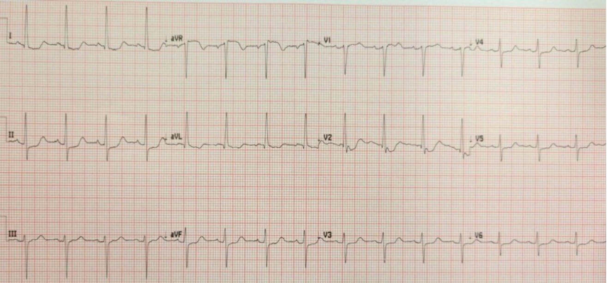
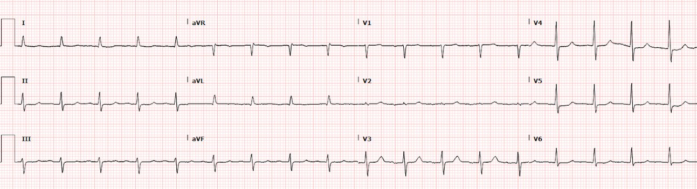
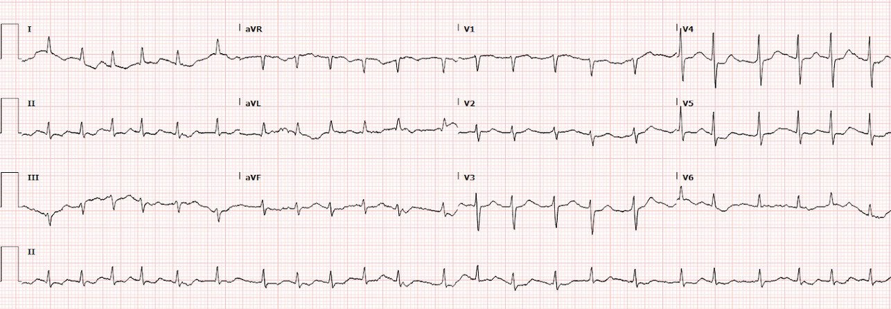
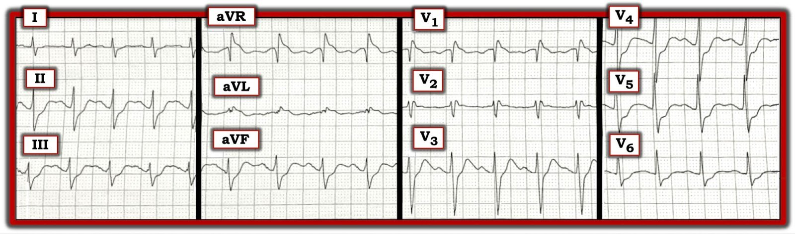

05/11/2022 — Bệnh nhân 90 tuổi đau ngực và đau thượng vị cấp, ST chênh xuống lan tỏa kèm ST chênh lên soi gương ở aVR: có kích hoạt phòng thông tim không?
Bản dịch tiếng Việt của bài "90 year old with acute chest and epigastric pain, and diffuse ST depression with reciprocal STE in aVR: activate the cath lab?" – Dr. Smith’s ECG Blog. Giữ nguyên toàn bộ 5 hình ảnh của bản gốc.
Ca bệnh do Mazen El-Baba MD gửi và viết, Jesse McLaren biên tập, Smith và Grauer biên tập/bình luận
Một bệnh nhân 90 tuổi có tiền sử rung nhĩ, đái tháo đường típ-2, tăng huyết áp, rối loạn lipid máu, đến viện vì đau ngực/đau thượng vị khởi phát cấp tính, buồn nôn và nôn. Huyết áp 110 và độ bão hòa oxy bình thường. Bạn diễn giải điện tâm đồ này thế nào và bạn sẽ làm gì tiếp theo?


Điện tâm đồ này cho thấy nhịp xoang bình thường với kiểu dẫn truyền bình thường (PR bình thường, QRS bình thường và QTc bình thường), trục bình thường, tăng tiến sóng R muộn (và V2 đặt sai vị trí), điện thế bình thường, ST chênh lên ở aVR và ST chênh xuống lan tỏa. Hình ảnh này đã được gọi là “tương đương STEMI” và được đưa vào các hướng dẫn về STEMI, gợi ý rằng bệnh nhân này nên được dùng kháng tiểu cầu kép, heparin và kích hoạt phòng thông tim (cath lab) ngay lập tức – hoặc tiêu sợi huyết ở các trung tâm không có phòng thông tim.
Smith: Nếu đây là ACS (một chữ “nếu” rất lớn), thì đây chính là lúc KHÔNG nên dùng liệu pháp kháng tiểu cầu kép “sớm trước can thiệp” (“upstream”) (“sớm trước can thiệp” nghĩa là dùng tại khoa cấp cứu trước khi chụp mạch vành). Đó là vì nếu căn nguyên là ACS, bệnh nhân có nguy cơ cao cần phẫu thuật bắc cầu chủ vành (CABG), và cuộc mổ sẽ phải trì hoãn nếu đã cho thuốc ức chế P2Y12 do nguy cơ chảy máu phẫu thuật. Cách tốt nhất là chờ đến khi giải phẫu mạch vành được xác định bằng chụp mạch, rồi nếu tiến hành PCI thì thêm Cangrelor (một thuốc ức chế P2Y12 tĩnh mạch)
Tôi đã gửi điện tâm đồ và thông tin lâm sàng của bệnh nhân 90 tuổi đau ngực này cho Dr. McLaren. Câu trả lời của ông: “thiếu máu cục bộ dưới nội tâm mạc. Bệnh sử nghe đáng lo về ACS (có thể là hẹp khít, bệnh ba nhánh), nhưng chẩn đoán phân biệt còn bao gồm bóc tách, xuất huyết tiêu hóa, v.v. Có thêm gì về bệnh sử không? Siêu âm tại giường (POCUS) sẽ hữu ích.”
Nói cách khác, thay vì nghĩ về ST chênh lên ở aVR, điều quan trọng là phải nghĩ xem điều gì có thể gây ra ST chênh xuống lan rộng kèm ST chênh lên soi gương ở aVR. Đặt câu hỏi: “điều gì gây ra ST chênh xuống lan rộng?” có thể thúc đẩy bác sĩ lâm sàng cân nhắc một chẩn đoán phân biệt rộng, phù hợp với bệnh cảnh lâm sàng.
ST chênh xuống lan rộng kèm ST chênh lên soi gương ở aVR có thể do:
- Liên quan tần số tim: rối loạn nhịp nhanh (ví dụ SVT, rung nhĩ nhanh)
- Dẫn truyền điện bất thường
- QT ngắn: digoxin
- QU dài: hạ kali máu
- Điện thế cao: LVH kèm ST chênh xuống thứ phát
- Thay đổi ST nguyên phát: thiếu máu cục bộ dưới nội tâm mạc lan tỏa
- Thiếu máu cục bộ do tăng nhu cầu, từ trạng thái giống sốc, ví dụ nhiễm khuẩn huyết, xuất huyết, PE, bóc tách động mạch chủ
- Căn nguyên nứt vỡ mảng xơ vữa/huyết khối mạch vành nguyên phát dẫn đến hẹp khít thân chung trái hoặc LAD, hoặc khi có bệnh nhiều nhánh mạch vành
Nếu ST chênh xuống toàn bộ được cho là do thiếu máu cục bộ dưới nội tâm mạc, thì khai thác bệnh sử kỹ, khám thực thể và siêu âm tại giường là then chốt để đi đến điểm quyết định tiếp theo – tìm nguyên nhân của thiếu máu cục bộ dưới nội tâm mạc. Một cuộc hội chẩn tim mạch cấp cứu có thể hữu ích cho những ca mơ hồ (equivocal).
Ca bệnh tiếp diễn:
Quyết định được đưa ra là chờ kết quả xét nghiệm máu ban đầu trong khi bác sĩ lâm sàng hoàn tất đánh giá POCUS tại giường và hoàn thành việc khám thực thể. POCUS cho thấy chức năng thất trái tốt và không có tràn dịch màng ngoài tim.
Smith: Cần lưu ý rằng trong thiếu máu cục bộ dưới nội tâm mạc, khác với OMI, việc không có rối loạn vận động thành là thường gặp.
Xem ca này: bạn nghĩ siêu âm tim cho thấy gì trong ca này?
Bệnh nhân có ấn đau bụng nhẹ nhưng lan tỏa. Với tiền sử AFib, đã chỉ định chụp CT mạch máu (CTA) ổ bụng để loại trừ thiếu máu mạc treo, viêm đại tràng thiếu máu hay tắc ruột non. Bệnh nhân được đặt theo dõi từ xa (telemetry).
Xét nghiệm máu ban đầu cho thấy: toan chuyển hóa trên khí máu tĩnh mạch (VBG) với lactat 7.1; Hgb 11g/dL (110g/L) và tăng bạch cầu, và troponin tăng nhẹ (36 ng/L, bình thường <26). Sau đó bệnh nhân đi ngoài ra máu, được điều dưỡng mô tả có màu giống màu giấy điện tâm đồ, và BP giảm xuống 8.8g/dL (88g/L) [người dịch: nguyên văn ghi “BP”, nhiều khả năng là lỗi đánh máy của “Hgb”].
Đã gọi cho bác sĩ chẩn đoán hình ảnh để ưu tiên chụp CT/CTA. Bệnh nhân được hồi sức bằng dịch và Ngoại tổng quát được hội chẩn cấp cứu với chẩn đoán giả định thiếu máu mạc treo. Bác sĩ chẩn đoán hình ảnh không thực hiện CTA vì lo ngại creatinin tăng, nhưng đã chụp CT bụng/chậu không cản quang, cho thấy bằng chứng hơi trong thành ruột (pneumatosis intestinalis). Bệnh nhân được đưa vào phòng mổ và một đoạn lớn ruột non đã được cắt bỏ do thiếu máu mạc treo.
Sau hồi sức và phẫu thuật, điện tâm đồ theo dõi cho thấy thiếu máu cục bộ dưới nội tâm mạc cải thiện, với troponin đỉnh 85 ng/L:


Nhưng ngày hôm sau bệnh nhân lại xuất hiện STE-aVR (và lúc này V2 đã được ghi đúng)? Chuyện gì đã xảy ra?


Lúc này bệnh nhân bị AF với đáp ứng thất nhanh. Có trôi đường nền nhưng có vẻ có STD lan tỏa nhẹ và STE-aVR soi gương. Một lần nữa, bệnh nhân không cần báo động STEMI (code STEMI) mà cần đánh giá căn nguyên của AFib và của STD – vốn có thể chỉ liên quan tần số, so với thiếu máu cục bộ dưới nội tâm mạc. Việc này đã phát hiện sốc nhiễm khuẩn đang tiến triển – đòi hỏi hồi sức, kháng sinh và kiểm soát ổ nhiễm, chứ không phải phòng thông tim. Đáng tiếc là dù đã điều trị tối đa, bệnh nhân vẫn mất bù do sốc nhiễm khuẩn và tử vong.
STD lan tỏa kèm STE-aVR soi gương: nguy cơ cao nhưng không đặc hiệu
STE-aVR kèm STD lan tỏa đã được gọi là “tương đương STEMI” và được đồng nhất với tắc thân chung động mạch vành trái. Nhưng một phân tích trên các bệnh nhân có hình ảnh như vậy cho thấy chỉ 28% là do ACS ở bất kỳ nhánh nào và chỉ 14% có tổn thương thân chung trái. Trong phần lớn các trường hợp, đó đơn giản là hình ảnh nền do LVH. Như các tác giả kết luận, “các khuyến cáo của AHA/ACCF/HRS về việc diễn giải hình ảnh điện tâm đồ này là biểu hiện của ‘thiếu máu cục bộ do tắc nghẽn nhiều nhánh mạch vành hoặc thân chung động mạch vành trái’, hàm ý rằng những bệnh nhân này nên được chuyển chụp mạch vành khẩn chỉ dựa trên hình ảnh điện tâm đồ, có thể không được ủng hộ bởi các phát hiện của chúng tôi; thuật ngữ ‘thiếu máu cục bộ dưới nội tâm mạc toàn chu vi’ có lẽ chính xác hơn.”[1]
Điều này quan trọng vừa để tránh kích hoạt phòng thông tim không cần thiết, vừa để cân nhắc các chẩn đoán phân biệt chết người khác. Trong một nghiên cứu trên các bệnh nhân được kích hoạt phòng thông tim dựa trên hình ảnh này, chỉ 10% có tắc mạch vành cấp, và không ca nào trong số đó ở thân chung trái. Nhưng một phần ba là ACS (phần lớn có bệnh nhiều nhánh mạch vành), một phần ba là rối loạn nhịp nhanh, và một phần ba là các trạng thái sốc không do mạch vành (nhiễm khuẩn huyết, xuất huyết, bóc tách, PE, tăng huyết áp cấp cứu, SAH). Ngoài ra, 36% toàn bộ nhóm đến viện trong tình trạng ngừng tim và tỷ lệ tử vong trong viện là 31%.[2] Vì vậy STD lan tỏa kèm STE-aVR soi gương là hình ảnh nguy cơ cao nhưng không đặc hiệu, nên điều quan trọng là nhận ra hình ảnh này rồi nhanh chóng xác định và điều trị nguyên nhân nền.
Như một bài tổng quan đã tóm tắt, “mặc dù gần một nửa số bệnh nhân có STE >1mm ở aVR do ACS sẽ cần phẫu thuật bắc cầu động mạch vành để tái thông mạch, động mạch thủ phạm thường không phải LM, mà là LAD hoặc bệnh 3 nhánh mạch vành nặng. Quan trọng hơn, những dấu hiệu điện tâm đồ như vậy thường do các căn nguyên không tắc nghẽn (ví dụ LVH nền, thiếu máu cục bộ do tăng nhu cầu thứ phát sau suy hô hấp, hẹp van động mạch chủ, sốc mất máu)… do đó, một số bài tổng quan của chuyên gia nhấn mạnh độ đặc hiệu thấp của hình ảnh STE ở aVR, và ưa gọi nó là thiếu máu cục bộ dưới nội tâm mạc toàn chu vi; trong hội chứng này, STE ở aVR là STE soi gương, soi gương với một vector STD hướng về các chuyển đạo II và V5… một số bệnh nhân có điện tâm đồ đã đạt tiêu chuẩn STEMI quy ước cũng có thể có STE ở chuyển đạo aVR. Dấu hiệu này không làm thay đổi nhu cầu tiến hành tái tưới máu cấp cứu, dù có thể gợi ý tiên lượng xấu hơn.”[3]
Điều cần nhớ:
- STE-aVR là soi gương của ST chênh xuống lan rộng, vốn có chẩn đoán phân biệt rộng
- Đây có thể là một hình ảnh nguy cơ cao nhưng không đặc hiệu, bao gồm rối loạn nhịp nhanh, các trạng thái sốc không do mạch vành, và ACS gồm cả OMI lẫn bệnh nhiều nhánh mạch vành cần CABG
- Khai thác bệnh sử kỹ, khám thực thể và POCUS – tập trung vào hồi sức các nguyên nhân có thể đảo ngược – có thể giúp xác định các nguyên nhân không do tim, và phân biệt với ACS cần chụp mạch vành
Tài liệu tham khảo
1. Knotts
RJ, Wilson JM, Kim E, Huang HD, Birnbaum Y. Diffuse ST depression with
ST elevation in aVR: Is this pattern specific for global ischemia due to
left main coronary artery disease? Tạp chí J Electrocardiol, năm 2013;46:240-8
2. Harhash AA, Huang JJ, Reddy S, và cs. aVR ST segment elevation: acute STEMI or not? Incidence of an acute coronary occlusion. Tạp chí Am J Med, năm 2019, 132(5):622-630.
3. Miranda DF, Lobo AS, Walsh B, và cs. New insights into the use of the 12-lead electrocardiogram for diagnosing acute myocardial infarction in the emergency department. Tạp chí Can J of Cardiol, năm 2018, 34: 132-145
Dưới đây là một số ca khác:
LVH, LBBB, RBBB, and RVH may manifest ST depression without any ischemia! (LVH, LBBB, RBBB và RVH có thể biểu hiện ST chênh xuống mà không hề có thiếu máu cục bộ!)
2 ca hẹp van động mạch chủ:
Diffuse Subendocardial Ischemia on the ECG. Left main? 3-vessel disease? No! (Thiếu máu cục bộ dưới nội tâm mạc lan tỏa trên điện tâm đồ. Thân chung trái? Bệnh ba nhánh mạch vành? Không!)
An elderly man with sudden cardiogenic shock, diffuse ST depressions, and STE in aVR (Một người đàn ông cao tuổi bị sốc tim đột ngột, ST chênh xuống lan tỏa và STE ở aVR)
Y văn
1. Knotts và cs. nhận thấy những dấu hiệu điện tâm đồ như vậy (STE ở aVR) chỉ đại diện cho ACS thân chung trái ở 14% số điện tâm đồ đó:
Chỉ 23% bệnh nhân có hình ảnh STE ở aVR có bất kỳ bệnh lý LM nào (ít hơn nếu định nghĩa là hẹp ≥ 50%). Chỉ 28% bệnh nhân có ACS ở bất kỳ nhánh nào, và trong số đó LM là thủ phạm ở chỉ 49% (14% tổng số ca). Đây là dấu hiệu nền ở 62% bệnh nhân, thường do LVH.
Tài liệu tham khảo: Knotts RJ, Wilson JM, Kim E, Huang HD, Birnbaum Y. Diffuse ST depression with ST elevation in aVR: Is this pattern specific for global ischemia due to left main coronary artery disease? J Electrocardiol 2013;46:240-8.
2. Giờ đây đã có một bài báo công bố năm 2019 chứng minh điểm này một cách không còn nghi ngờ, dù cũng cho thấy rõ rằng hình ảnh này liên quan đến tỷ lệ tử vong rất cao.
https://www.sciencedirect.com/science/article/abs/pii/S000293431930049X
Harhash AA và cs. aVR ST Segment Elevation: Acute STEMI or Not? Incidence of an Acute Coronary Occlusion (ST chênh lên ở aVR: STEMI cấp hay không? Tỷ lệ tắc mạch vành cấp). American Journal of Medicine 132(5):622-630; tháng Năm năm 2019.
Đây là phần tóm tắt:
Bối cảnh
Việc nhận diện nhồi máu cơ tim ST chênh lên (STEMI) là then chốt vì tái tưới máu sớm có thể cứu cơ tim và tăng tỷ lệ sống còn. ST chênh lên (STE) ở chuyển đạo tăng thế vector phải (aVR), đi kèm ST chênh xuống ở nhiều chuyển đạo, đã được khuyến cáo là dấu hiệu của tắc cấp thân chung trái hoặc động mạch liên thất trước đoạn gần trong các hướng dẫn STEMI năm 2013. Chúng tôi khảo sát tỷ lệ có động mạch vành bị tắc cấp ở các bệnh nhân đến viện với STE-aVR kèm ST chênh xuống ở nhiều chuyển đạo.
Phương pháp
Các ca kích hoạt STEMI từ tháng Một năm 2014 đến tháng Tư năm 2018 tại University of Arizona Medical Center được xác định. Tất cả điện tâm đồ (ECG) và phim chụp mạch vành được phân tích mù bởi các bác sĩ tim mạch giàu kinh nghiệm. Trong số 847 ca kích hoạt STEMI, 99 bệnh nhân (12%) được xác định có STE-aVR kèm ST chênh xuống ở nhiều chuyển đạo.
Bình luận của Smith: đây là một quần thể rất hạn chế, vì chỉ gồm những bệnh nhân đã được kích hoạt báo động STEMI. Nhiều khả năng còn nhiều bệnh nhân khác có STE-aVR không được kích hoạt báo động STEMI vì không bị nghi ngờ mắc ACS.
Kết quả
Chụp mạch vành cấp cứu được thực hiện ở 80% (79/99) bệnh nhân. Ba mươi sáu bệnh nhân (36%) đến viện trong tình trạng ngừng tim, và 78% (28/36) được chụp mạch vành cấp cứu. Tắc mạch vành được cho là thủ phạm chỉ được xác định ở 8 bệnh nhân (10%), và không tổn thương nào trong số đó là tắc thân chung hay tắc động mạch liên thất trước. Tổng cộng 47 bệnh nhân (59%) được phát hiện có bệnh mạch vành nặng, nhưng phần lớn còn dòng chảy đoạn xa nguyên vẹn. Ba mươi hai bệnh nhân (40%) có bệnh nhẹ đến trung bình hoặc không có bệnh đáng kể. Tuy nhiên, STE-aVR kèm ST chênh xuống ở nhiều chuyển đạo liên quan đến tỷ lệ tử vong trong bệnh viện 31%, so với chỉ 6.2% ở một phân nhóm 190 bệnh nhân STEMI không có STE-aVR (p nhỏ hơn 0.00001).
Bình luận: Một lần nữa, nghiên cứu này không bao gồm nhiều bệnh nhân STE-aVR không được kích hoạt báo động, vì vậy số bệnh nhân mắc ACS thậm chí còn ít hơn, và tỷ lệ tử vong ở nhóm này cao hơn nhiều so với toàn bộ bệnh nhân có STE-aVR.
Kết luận
STE-aVR kèm ST chênh xuống ở nhiều chuyển đạo chỉ liên quan đến tắc mạch vành do huyết khối cấp ở 10% bệnh nhân. Việc kích hoạt báo động STEMI thường quy khi có STE-aVR để tái thông mạch cấp cứu là không có cơ sở, mặc dù thông tim khẩn, thay vì cấp cứu, có vẻ là quan trọng.

===================================
BÌNH LUẬN CỦA TÔI, bởi KEN GRAUER, MD (4/11/2022):
===================================
Xin cảm ơn BS. El-Baba và BS. McLaren — vì phần trình bày trong bài hôm nay về một chủ đề quan trọng, đáng được chúng ta nhắc lại định kỳ. Chúng tôi đã trình bày nhiều biến thể của chủ đề này trên Blog của Dr. Smith — và điểm đặc biệt của ca hôm nay là việc phát hiện ra nhờ khám bụng!
- Thay vì mặc định theo phản xạ rằng ST chênh xuống lan tỏa kèm ST chênh lên ở chuyển đạo aVR luôn luôn có nghĩa là bệnh mạch vành cấp — việc thăm khám đầy đủ bệnh nhân hôm nay đã phát hiện bụng đau khi ấn — dẫn tới chẩn đoán thiếu máu mạc treo kèm sốc nhiễm khuẩn.
Thêm MỘT CA nữa:
Để củng cố các khái niệm mà BS. El-Baba và BS. McLaren đã nêu ra trong ca hôm nay — Hãy xem xét điện tâm đồ trong Hình 1, ghi từ một người cao tuổi.
- Với điện tâm đồ này — Có nên kích hoạt phòng thông tim không?


CÁCH TIẾP CẬN CỦA TÔI với điện tâm đồ trong Hình 1:
Tôi thường ưu tiên cách tiếp cận đọc điện tâm đồ gồm 2 bước:
- Bước #1 ( = Phân tích mô tả) — trong đó 6 thông số gồm Tần số — Nhịp — Các khoảng (PR, QRS, QTc) — Trục — Lớn các buồng tim — và Thay đổi Q-R-S-T — được đánh giá một cách có hệ thống.
- Bước #2 ( = Nhận định lâm sàng) — trong đó các dấu hiệu từ Bước #1 được đối chiếu lâm sàng và diễn giải dựa trên bệnh sử và thăm khám của bệnh nhân.
- Điểm MẤU CHỐT: Theo kinh nghiệm của tôi — các bác sĩ lâm sàng quá thường xuyên không nhận ra rằng quy trình có hệ thống và các dấu hiệu phát hiện được ở Bước #1 là như nhau bất kể hoàn cảnh của bệnh nhân. Ví dụ — sự hiện diện của sóng Q, kích thước của sóng R và sóng S, và số milimét ST chênh lên hay chênh xuống không thay đổi theo bệnh sử. Điều có thay đổi — là cách bạn đối chiếu lâm sàng các dấu hiệu điện tâm đồ này tùy theo tuổi của bệnh nhân, triệu chứng của họ — và xem xét bản ghi nền của bệnh nhân trông như thế nào (nếu có điện tâm đồ cũ để so sánh).
- Để biết thêm về “Quan điểm của tôi” đối với cách tiếp cận có hệ thống trong đọc điện tâm đồ — Mời xem Bình luận của tôi ở cuối trang trong bài ngày 17 tháng Mười năm 2022 trên Dr. Smith’s ECG Blog.
Đánh giá có hệ thống điện tâm đồ trong Hình 1:
Phân tích mô tả của tôi về các dấu hiệu điện tâm đồ trong Hình 1 như sau:
- Nhịp nhanh xoang khoảng ~110 lần/phút.
- Khoảng PR bình thường.
- Thời gian QRS có vẻ kéo dài ở mức giới hạn — và trông phù hợp với blốc nhánh phải không hoàn toàn (IRBBB) (dù phần đi xuống của sóng r’ ở chuyển đạo V1 hơi rộng ra, gần như gợi ý kiểu hình sao chép Brugada (Brugada phenocopy)).
- QTc hơi kéo dài (dù điều này khó đánh giá do nhịp nhanh).
- Không lớn buồng tim.
- Và dấu hiệu đáng chú ý nhất — là ST chênh xuống lan tỏa (ở ít nhất 7 chuyển đạo) — kèm ST chênh lên rõ nhất ở chuyển đạo aVR, nhưng cũng thấy ở các chuyển đạo aVL và V1.
NHẬN ĐỊNH LÂM SÀNG CỦA TÔI:
Điện tâm đồ trong Hình 1 — cho thấy nhịp nhanh xoang — blốc nhánh phải không hoàn toàn — với ST chênh xuống rõ rệt ở nhiều chuyển đạo (kèm ST chênh lên ở chuyển đạo aVR, cũng như ở các chuyển đạo V1 và aVL). Các dấu hiệu điện tâm đồ này phải gợi ý ngay đến các Chẩn đoán phân biệt sau:
- Bệnh mạch vành nặng (do thân chung động mạch vành trái, LAD đoạn gần, và/hoặc bệnh 2 hoặc 3 nhánh mạch vành nặng) — mà trong bối cảnh lâm sàng phù hợp có thể chỉ ra ACS (hội chứng vành cấp — Acute Coronary Syndrome).
- Thiếu máu cục bộ dưới nội tâm mạc do nguyên nhân khác (tức là loạn nhịp nhanh kéo dài; ngừng tim; sốc/hạ huyết áp nặng; xuất huyết tiêu hóa; thiếu máu; “bệnh nhân nặng”; v.v.).
- XIN NHẤN MẠNH: Hình ảnh thiếu máu cục bộ dưới nội tâm mạc lan tỏa này không gợi ý tắc mạch vành cấp (tức là đây không phải hình ảnh của nhồi máu cơ tim cấp) — mà là thiếu máu cục bộ do các chẩn đoán phân biệt nêu trên! Trên thực tế — Không thể nói gì hơn thế cho đến khi chúng ta biết hoàn cảnh lâm sàng của bệnh nhân trước mặt.
- NẾU bệnh sử của bệnh nhân có điện tâm đồ trong Hình 1 là đau ngực mới xuất hiện, đáng lo ngại — thì ST chênh xuống lan tỏa kèm ST chênh lên ở chuyển đạo aVR sẽ gợi ý bệnh mạch vành nặng, đáng được thông tim sớm để xác định giải phẫu.
- Hóa ra điện tâm đồ trong Hình 1 này là của một bệnh nhân suy giảm chức năng tâm thần do xuất huyết thần kinh trung ương! Vì vậy — thông tim đã không được thực hiện — vì kết quả thông tim sẽ không thay đổi được kết cục đáng tiếc. Về mặt thống kê — khả năng cao là ST chênh xuống lan tỏa trên điện tâm đồ này không phải do bệnh mạch vành nặng.
- ĐIỀU CỐT LÕI từ ca hôm nay: Như BS. El-Baba và BS. McLaren đã nêu — điều quan trọng là: i) Nhận ra kịp thời hình ảnh điện tâm đồ của thiếu máu cục bộ dưới nội tâm mạc lan tỏa; và, ii) Hiểu rằng nguyên nhân của hình ảnh này rất nhiều — và không phải lúc nào cũng do bệnh mạch vành nặng!